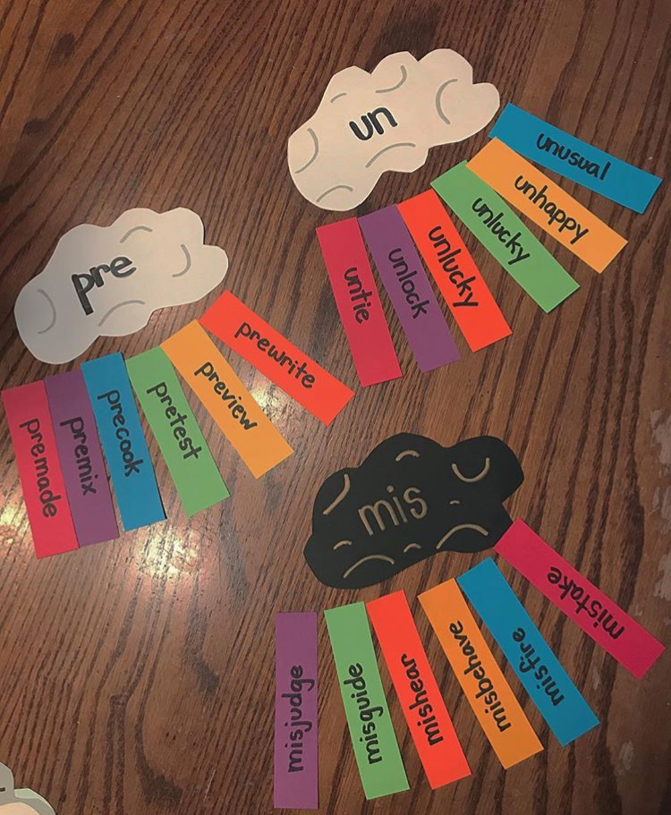

This prefix center allows students to apply their understanding structural analysis to word play. Applying their knowledge of prefixes helps the students determine what new words mean. The students can match the prefixes and then write sentences using the words. The students can then check the back of the words for the correct definition to check their responses.
